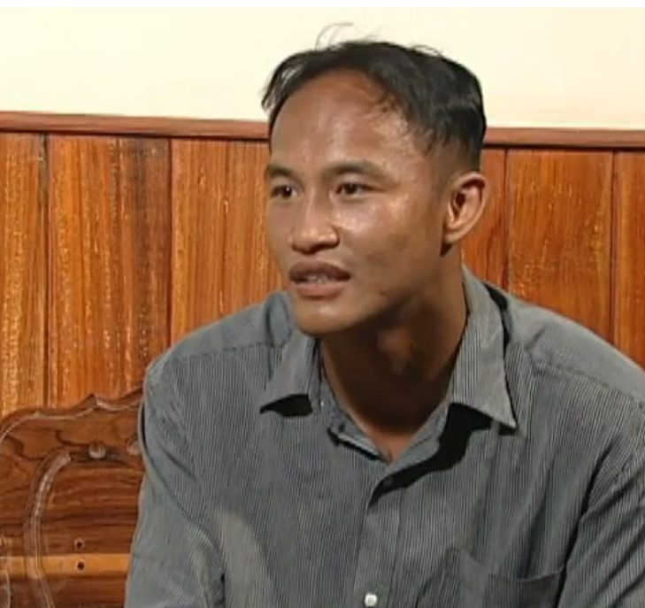

Liaoning Win First Chinese Women's Super League Title With a Round to Spare
A 1-1 draw at home to Beijing in Shenyang settled the title, a year after Liaoning lost it on the final day to the same opponents.

Ten-Man England Beat Spain 3-2 in Madrid to Top Their Nations League Group
Kane, Konsa and White scored before Elliot Anderson's red card, and England held on to end Spain's 43-match unbeaten run.

On This Day in 2005: Australia Ends 31-Year Wait to Qualify for World Cup
The Socceroos defeated Uruguay in a dramatic penalty shootout at Stadium Australia to reach the 2006 FIFA World Cup.

China Win Four Golds at Beijing Speed Skating World Cup as Ning, Lian and Gao Deliver
Ning Zhongyan won the 1,000m in a track record and the 1,500m, while Lian Ziwen and Gao Tingyu took one 500m race each at the Ice Ribbon.

Eh Phouthong: The Koh Kong Fighter Who Became the Face of Kun Khmer
A national champion across several weight classes, he beat international opponents in Phnom Penh, taught street children for free and now coaches Cambodia's next champions.
Top stories

Ma Long: From Anshan Prodigy to Six Olympic Gold Medals
He was left out of China's singles team for London 2012, then won back-to-back Olympic singles titles and three straight world championships.

Japan Beat Brazil 3-2 in Singapore With a Stoppage-Time Winner
Tatsuhiro Sakamoto scored in the 91st minute after a Vinicius Junior double had brought Brazil level; Carlo Ancelotti and Raphinha were sent off.

Gane Hands Hokit His First Defeat and Harrison Submits Nunes at UFC 334
Both champions kept their titles at Madison Square Garden: Ciryl Gane on three 48-47 scorecards, Kayla Harrison by rear-naked choke in the fourth round.

Vietnam U23 Draw 1-1 With Qatar to Win the Gia Lai VTV Cup Unbeaten
Nguyen Minh Tam equalised just after half-time in Pleiku, giving the hosts the point they needed for the title.

India U17 Beat Guam 12-0 to Go Top of Their Asian Cup Qualifying Group
Captain Dallalmuon Gangte scored a first-half hat-trick in Kuala Lumpur; India now meet Palestine, who also have six points.

On This Day in 2010: Sebastian Vettel wins first F1 title to become youngest champion
Red Bull Racing's German star secured the Drivers' Championship at the Abu Dhabi Grand Prix, launching a four-year era of dominance for the team.
FootballMore →
TennisMore →


Combat sportsMore →
MotorsportMore →


Olympic sportsMore →

Ice hockeyMore →

Features
Eh Phouthong: The Koh Kong Fighter Who Became the Face of Kun Khmer
A national champion across several weight classes, he beat international opponents in Phnom Penh, taught street children for free and now coaches Cambodia's next champions.
On This Day in 2005: Australia Ends 31-Year Wait to Qualify for World Cup
The Socceroos defeated Uruguay in a dramatic penalty shootout at Stadium Australia to reach the 2006 FIFA World Cup.